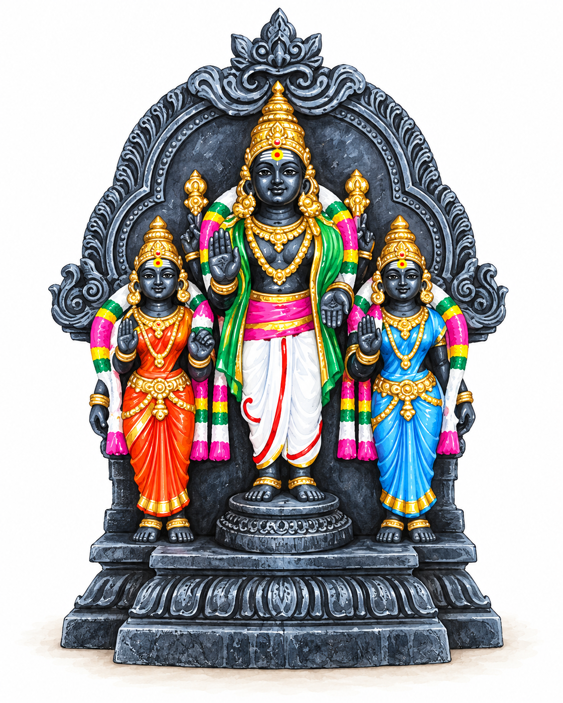

A Golu figure
Murugan: Courage, Wisdom, and Devotion
The deity known as Kartikeya or Subramanya, whose stories bring together knowledge, duty, and love.

Lord Murugan, also known as Kartikeya or Subramanya, is the son of Shiva and Parvati and the younger brother of Ganesha. He represents courage and wisdom, and holds a deep place in Tamil devotional tradition.
The vel and the peacock
Murugan is often depicted holding a spear called the vel, alongside his peacock. The vel represents knowledge overcoming ignorance: a reminder that courage is not merely strength, but also the clarity to see through confusion.
Two paths to spiritual understanding
Murugan has two wives, whose stories represent different paths toward spiritual understanding in Hinduism.
Deivanai (red) is a celestial princess whose marriage to Murugan is arranged. She represents the path of duty and action: growing spiritually through discipline, doing the right thing, and fulfilling our responsibilities.
Valli (blue) is a young woman raised among the hill-dwelling communities of Tamil Nadu. Murugan falls in love with her and, after some playful courtship, they marry. She represents the path of love and devotion, or bhakti.
Love, devotion, and wisdom
In Hindu thought, true love and devotion can help us loosen our ego and our attachment to ourselves. This can lead to the recognition that we are not truly separate from the rest of existence—a realization considered a path to lasting peace and happiness.
Together, Valli, Deivanai, and Murugan also represent three powers, or shakti: the power of desire (Iccha Shakti), action (Kriya Shakti), and wisdom (Jnana Shakti).